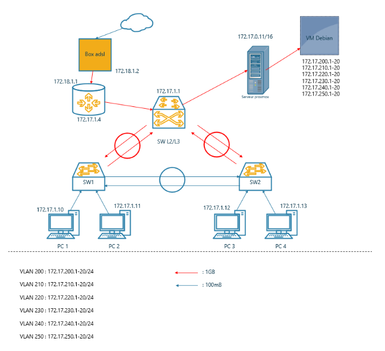

Conception, adressage et configuration (Cisco IOS) d'une infrastructure réseau d'entreprise complète.
L'objectif de cette SAÉ était de déployer un réseau local (LAN) sécurisé et fonctionnel à partir de zéro. J'ai dû élaborer le plan d'adressage IP, configurer les équipements (Switchs et Routeurs Cisco) et valider la connectivité globale.

Topologie réseau : Cœur de réseau multicouche, distribution et routeur de bordure.
Le cahier des charges exigeait la création de multiples VLANs (Compta, Admin, Vente, etc.) isolés au niveau 2, mais capables de communiquer au niveau 3. De plus, chaque PC devait recevoir une IP dynamiquement sans avoir de serveur DHCP physique dédié.
Les postes internes utilisaient un adressage privé (172.17.0.0/16). Pour qu'ils puissent accéder à Internet via la Box ADSL (192.168.111.1), il fallait masquer ces adresses privées.
Fichiers de configuration complets :
📊 Schéma Visio (.vsdx) 📄 Config Switch Cœur de réseau 📄 Config Switch d'accès 📄 Config Routeur NAT